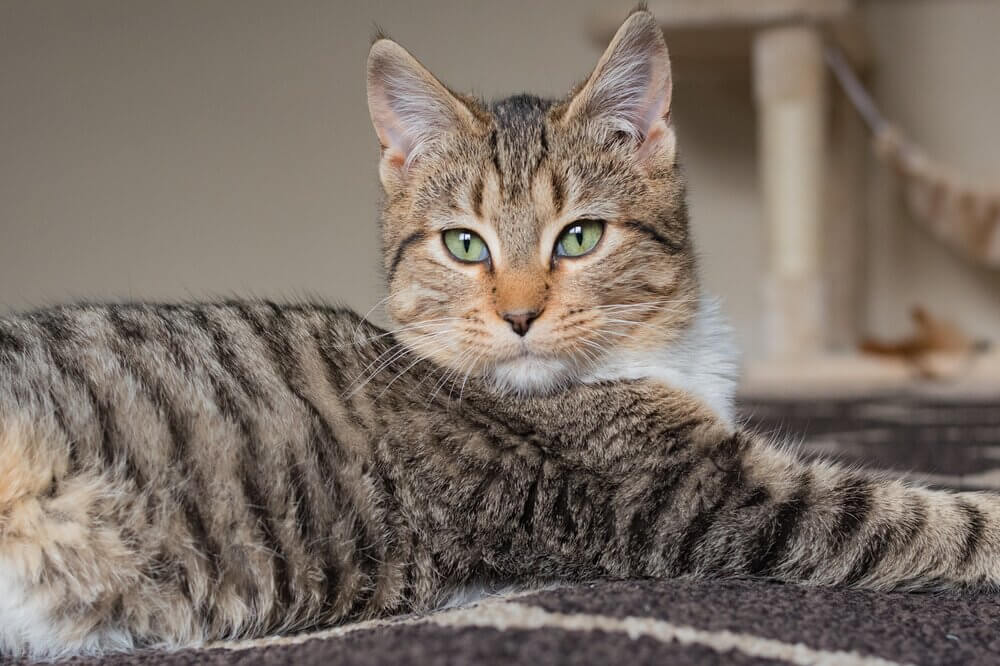

Welcome to the Adoption Site For Your New Best Friend!
Our goal is to help individuals that are looking to find a feline companion or two or three! We want to make the adoption process as easy as possible so that nothing stands in the way of these beautiful creatures finding homes.
Approximately 6.3 million companion animals enter U.S. animal shelters nationwide every year. Of those, approximately 3.2 million are cats.
Approximately 4.1 million shelter animals are adopted each year: 2 million dogs and 2.1 million cats
It's estimated that 85.8 million cats are owned in the United States. Approximately 35% of all households in the United States have a cat. (Source: American Pet Products Association 2015-2016 (APPA))

Each year, approximately 2.7 million animals are euthanized (1.4 million cats).